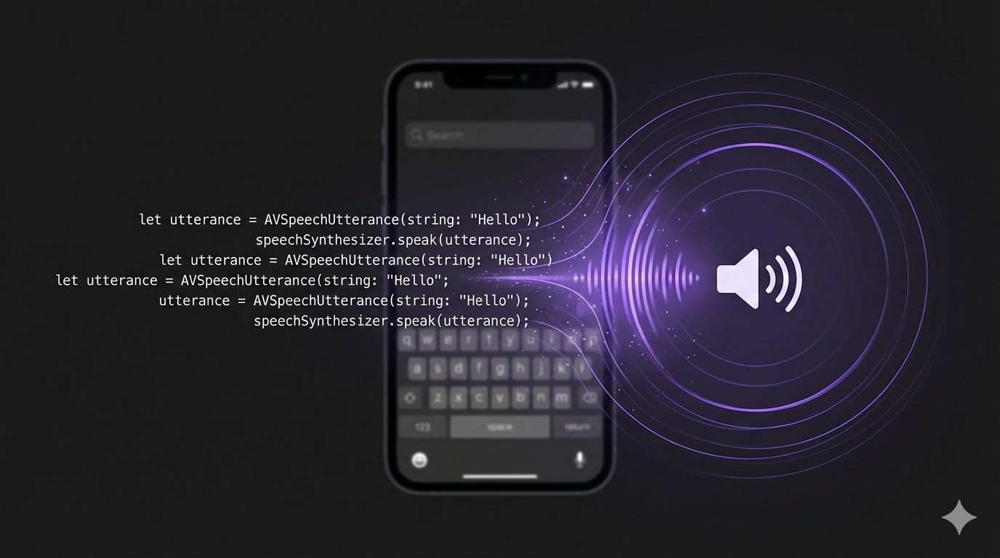

Wally Swift SDK Part 3: Text-to-Speech with Piper

Natural Voice Synthesis Entirely On-Device
This is Part 3 of our Wally Swift SDK tutorial series:
- Chat with LLMs — Project setup and streaming text generation
- Speech-to-Text — Real-time transcription with Whisper
- Text-to-Speech (this post) — Natural voice synthesis with Piper
- Voice Pipeline — Full voice assistant with VAD
Text-to-speech brings your app to life. With Wally, you can synthesize natural-sounding speech using Piper—completely on-device, with no network latency.
Like STT, TTS has an audio format challenge: Piper outputs raw Float32 PCM, but AVAudioPlayer expects WAV files. This tutorial covers both the API and the conversion.
Prerequisites
- Complete Part 1 first to set up your project with the Wally SDK
- ~65MB additional storage for the Piper voice model
Register the TTS Voice
Add Piper to your model registration:
1// Register TTS voice (Piper)2Wally.registerModel(3 id: "vits-piper-en_US-lessac-medium",4 name: "Piper US English",5 url: URL(string: "https://github.com/RunanywhereAI/sherpa-onnx/releases/download/runanywhere-models-v1/vits-piper-en_US-lessac-medium.tar.gz")!,6 framework: .onnx,7 modality: .speechSynthesis,8 artifactType: .archive(.tarGz, structure: .nestedDirectory),9 memoryRequirement: 65_000_00010)
Important: Piper Output Format
Piper outputs audio in a specific format:
| Parameter | Value |
|---|---|
| Sample Rate | 22,050 Hz |
| Channels | 1 (mono) |
| Format | 32-bit float (Float32) PCM |
AVAudioPlayer can't play raw Float32 PCM directly—you need to convert it to a WAV file with Int16 samples.
Loading and Using TTS
1// Download the voice (one-time, ~65MB)2if !(await Wally.isModelDownloaded("vits-piper-en_US-lessac-medium")) {3 let progressStream = try await Wally.downloadModel("vits-piper-en_US-lessac-medium")4 for await progress in progressStream {5 print("Download: \(Int(progress.overallProgress * 100))%")6 if progress.stage == .completed { break }7 }8}910// Load TTS voice into memory11try await Wally.loadTTSVoice("vits-piper-en_US-lessac-medium")1213// Synthesize speech14let options = TTSOptions(rate: 1.0, pitch: 1.0, volume: 1.0)15let output = try await Wally.synthesize("Hello, world!", options: options)1617// output.audioData is Float32 PCM at 22kHz18// output.duration is the audio length in seconds
API Pattern: Like
loadSTTModel(), the SDK usesloadTTSVoice()for speech synthesis models. LLM, STT, and TTS each have dedicated load/unload methods because they use different runtimes and memory pools. You can have all three loaded simultaneously.

Converting Float32 PCM to WAV
Here's the conversion code you'll need:
1class TTSPlayer {2 private var player: AVAudioPlayer?3 private var currentTempURL: URL?45 func playTTSAudio(_ data: Data) throws {6 // Clean up previous temp file7 cleanupTempFile()89 // Check if already WAV (some outputs may be pre-formatted)10 let isWAV = data.prefix(4) == Data("RIFF".utf8)1112 let audioData: Data13 if isWAV {14 audioData = data15 } else {16 // Convert Float32 PCM to Int16 WAV17 audioData = convertFloat32ToWAV(data, sampleRate: 22050)18 }1920 // Write to temp file (more reliable than Data init)21 let tempURL = FileManager.default.temporaryDirectory22 .appendingPathComponent("tts_output.wav")23 try audioData.write(to: tempURL)24 currentTempURL = tempURL2526 // Play (keeping reference so player isn't deallocated)27 player = try AVAudioPlayer(contentsOf: tempURL)28 player?.play()29 }3031 private func cleanupTempFile() {32 if let url = currentTempURL {33 try? FileManager.default.removeItem(at: url)34 currentTempURL = nil35 }36 }3738 deinit {39 cleanupTempFile()40 }41}
Important: The
playermust be stored as a property, not a local variable. A localAVAudioPlayergets deallocated immediately, cutting off playback mid-stream.
The Conversion Function
1func convertFloat32ToWAV(_ floatData: Data, sampleRate: Int) -> Data {2 // Convert Float32 samples to Int163 let sampleCount = floatData.count / 4 // 4 bytes per Float324 var int16Data = Data()56 floatData.withUnsafeBytes { buffer in7 let floats = buffer.bindMemory(to: Float.self)8 for i in 0..<sampleCount {9 // Clamp to [-1, 1] range and scale to Int1610 let clamped = max(-1, min(1, floats[i]))11 let int16 = Int16(clamped * Float(Int16.max))12 int16Data.append(contentsOf: withUnsafeBytes(of: int16.littleEndian) { Array($0) })13 }14 }1516 // Add WAV header17 return createWAVHeader(dataSize: int16Data.count, sampleRate: sampleRate) + int16Data18}1920// WAV files use little-endian byte order (per the RIFF specification),21// regardless of the host CPU architecture.22func createWAVHeader(dataSize: Int, sampleRate: Int) -> Data {23 var header = Data()2425 let channels: Int16 = 126 let bitsPerSample: Int16 = 1627 let byteRate = sampleRate * Int(channels) * Int(bitsPerSample / 8)28 let blockAlign = Int16(channels) * (bitsPerSample / 8)29 let fileSize = 36 + dataSize3031 // RIFF header32 header.append(contentsOf: "RIFF".utf8)33 header.append(contentsOf: withUnsafeBytes(of: UInt32(fileSize).littleEndian) { Array($0) })34 header.append(contentsOf: "WAVE".utf8)3536 // fmt subchunk37 header.append(contentsOf: "fmt ".utf8)38 header.append(contentsOf: withUnsafeBytes(of: UInt32(16).littleEndian) { Array($0) }) // Subchunk size39 header.append(contentsOf: withUnsafeBytes(of: UInt16(1).littleEndian) { Array($0) }) // PCM format40 header.append(contentsOf: withUnsafeBytes(of: UInt16(channels).littleEndian) { Array($0) })41 header.append(contentsOf: withUnsafeBytes(of: UInt32(sampleRate).littleEndian) { Array($0) })42 header.append(contentsOf: withUnsafeBytes(of: UInt32(byteRate).littleEndian) { Array($0) })43 header.append(contentsOf: withUnsafeBytes(of: UInt16(blockAlign).littleEndian) { Array($0) })44 header.append(contentsOf: withUnsafeBytes(of: UInt16(bitsPerSample).littleEndian) { Array($0) })4546 // data subchunk47 header.append(contentsOf: "data".utf8)48 header.append(contentsOf: withUnsafeBytes(of: UInt32(dataSize).littleEndian) { Array($0) })4950 return header51}
Complete TTS View
Here's a SwiftUI view with synthesis controls:
1struct TextToSpeechView: View {2 @State private var inputText = "Hello! This is text-to-speech running entirely on your device."3 @State private var isSynthesizing = false4 @State private var speechRate: Double = 1.05 @State private var ttsPlayer = TTSPlayer()67 var body: some View {8 VStack(spacing: 24) {9 // Text input10 TextEditor(text: $inputText)11 .frame(height: 120)12 .padding(8)13 .background(Color.secondary.opacity(0.1))14 .cornerRadius(12)1516 // Rate slider17 VStack(alignment: .leading) {18 Text("Speed: \(String(format: "%.1f", speechRate))x")19 .font(.caption)20 Slider(value: $speechRate, in: 0.5...2.0)21 }2223 // Speak button24 Button(action: synthesizeAndPlay) {25 HStack {26 Image(systemName: isSynthesizing ? "hourglass" : "speaker.wave.2.fill")27 Text(isSynthesizing ? "Synthesizing..." : "Speak")28 }29 .frame(maxWidth: .infinity)30 .padding()31 .background(Color.blue)32 .foregroundColor(.white)33 .cornerRadius(12)34 }35 .disabled(isSynthesizing || inputText.isEmpty)36 }37 .padding()38 }3940 private func synthesizeAndPlay() {41 Task {42 isSynthesizing = true43 do {44 let options = TTSOptions(rate: Float(speechRate), pitch: 1.0, volume: 1.0)45 let output = try await Wally.synthesize(inputText, options: options)4647 // Convert and play using our TTSPlayer48 try ttsPlayer.playTTSAudio(output.audioData)49 } catch {50 print("TTS error: \(error)")51 }52 isSynthesizing = false53 }54 }55}
Memory Management
When you're done with TTS, unload the voice to free memory:
1// Unload TTS voice (no parameters needed)2try await Wally.unloadTTSVoice()
TTS voices can be loaded independently alongside the LLM and STT models—they don't conflict.
Models Reference
| Model ID | Size | Notes |
|---|---|---|
vits-piper-en_US-lessac-medium | ~65MB | Natural US English |
What's Next
In Part 4, we'll combine everything into a complete voice assistant with automatic Voice Activity Detection.
Resources
Questions? Open an issue on GitHub or reach out on Twitter/X.